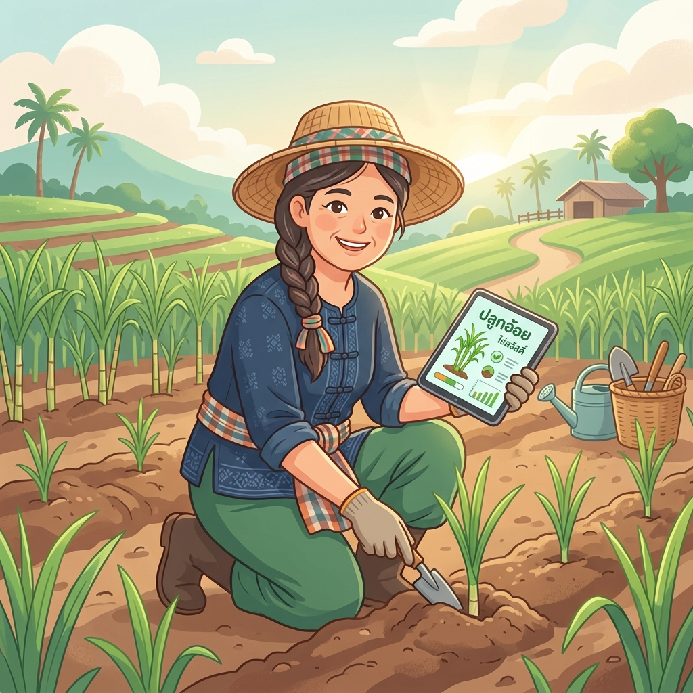
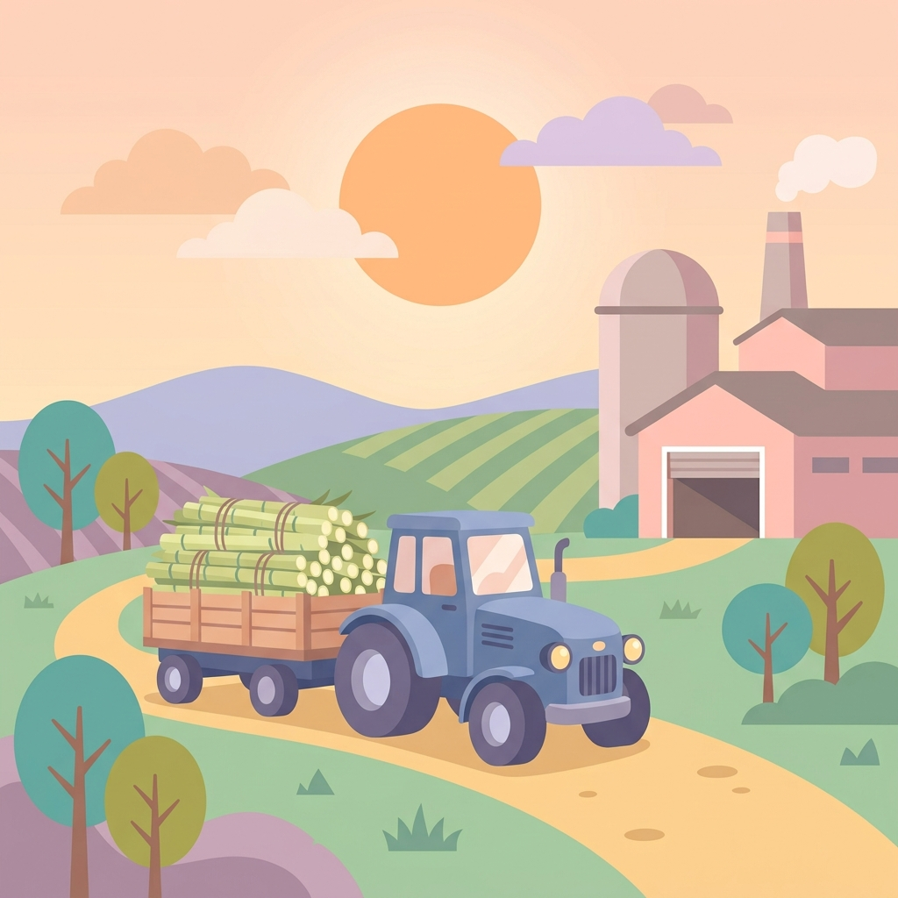
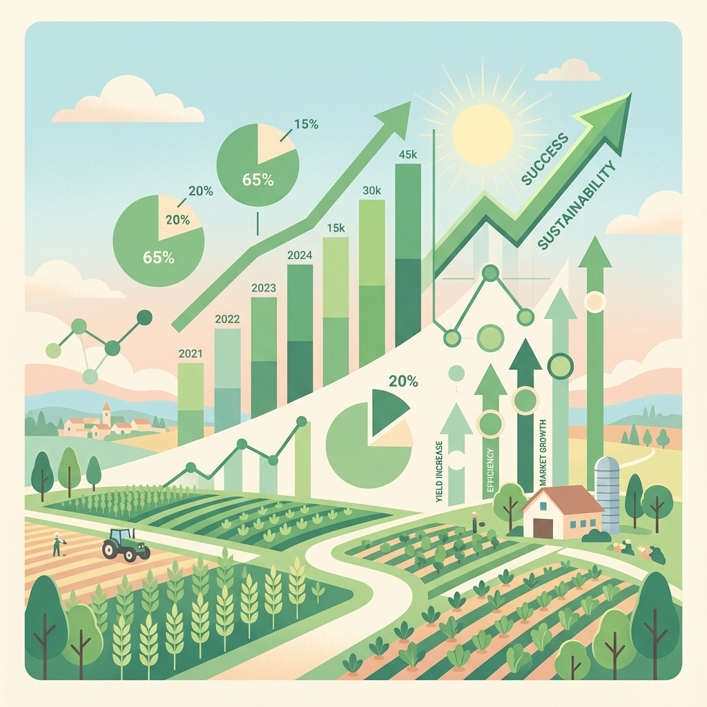

🎋 1. บทนำและคุณสมบัติเด่น
ยินดีต้อนรับสู่แอปพลิเคชัน Smart Farmer Book เพื่อนคู่คิดสำหรับพี่น้องชาวไร่อ้อยและพนักงานส่งเสริมการเกษตรของโรงงานน้ำตาล แอปนี้พัฒนาขึ้นเพื่อเปลี่ยนการจดบันทึกในสมุดกระดาษแบบเดิมๆ มาเป็นระบบดิจิทัลที่ใช้งานง่าย สะดวก รวดเร็ว และเพิ่มประสิทธิภาพการบำรุงรักษาไร่อ้อยอย่างยั่งยืน
คุณสมบัติเด่นของระบบ:
- ทำงานออฟไลน์ 100% (Offline Resilience): บันทึกพิกัด จดต้นทุน หรือดูสถิติได้ในไร่อ้อยโดยไม่ต้องมีสัญญาณอินเทอร์เน็ต ระบบจะบันทึกข้อมูลเก็บในเครื่องอย่างปลอดภัย และอัปโหลดประสานข้อมูล (Auto-Sync) ขึ้นคลาวด์อัตโนมัติเมื่อมีเน็ต
- ภาพรวมข้อมูลอัจฉริยะ: มีระบบพยากรณ์ผลผลิตและประเมินกำไรสะสมก่อนเก็บเกี่ยว วิเคราะห์จุดคุ้มทุนเรียลไทม์ และระบบสแกนตรวจสอบโรคอ้อยด้วยปัญญาประดิษฐ์ (AI)
- การเข้าถึงสำหรับทุกคน: รองรับการสั่งเปิดเสียงบรรยายการใช้งานเป็นภาษาอีสานหรือภาษาไทยกลาง พร้อมระบบขยายขนาดอักษรเพื่อเอื้ออำนวยแก่ผู้สูงอายุ
📲 2. วิธีติดตั้งแอปลงบนมือถือ (PWA)
Smart Farmer Book เป็นเว็บแอปพลิเคชันประเภท Progressive Web App (PWA) ซึ่งท่านสามารถติดตั้งลงในหน้าจอโฮมของโทรศัพท์มือถือเสมือนแอปพลิเคชันทั่วไป โดยไม่ต้องโหลดผ่าน App Store หรือ Play Store:
วิธีการติดตั้งบนระบบ iOS (iPhone / iPad - เบราว์เซอร์ Safari):
- เปิดลิงก์แอปพลิเคชันผ่านเบราว์เซอร์ Safari
- แตะปุ่มแชร์ [⎋] บริเวณเมนูด้านล่างสุดของหน้าจอ
- เลื่อนหาเมนูและเลือก "เพิ่มไปยังหน้าจอโฮม" (Add to Home Screen)
- กดปุ่ม "เพิ่ม" (Add) มุมบนขวา แอปจะปรากฏบนหน้าจอโฮมของท่านทันที
วิธีการติดตั้งบนระบบ Android (เบราว์เซอร์ Chrome):
- เปิดลิงก์แอปพลิเคชันผ่านเบราว์เซอร์ Chrome
- จะมีแถบสีฟ้าแจ้งเตือน "ติดตั้งแอปพลิเคชันลงบนมือถือ" ปรากฏขึ้นมา หรือแตะจุดสามจุดบริเวณมุมขวาบนของ Chrome แล้วเลือก "ติดตั้งแอป" (Install App)
- กดยืนยันการติดตั้ง ระบบจะจัดสร้างไอคอนแอปบนหน้าจอโฮมและหน้าจอแอปรวมทันที
💡 ประโยชน์ของการติดตั้งแอป:
ช่วยให้เปิดแอปได้รวดเร็วขึ้นผ่านหน้าจอโฮม ทำงานแบบเต็มจอไม่มีแถบที่อยู่เว็บรบกวนสายตา และสามารถเรียกเปิดใช้งานบันทึกข้อมูลแปลงได้ในพื้นที่ป่าหรือหุบเขาที่ไม่มีสัญญาณอินเทอร์เน็ตเลยได้อย่างสมบูรณ์แบบ
🔐 3. ขั้นตอนการเข้าสู่ระบบแบบปลอดภัย
ระบบตรวจสอบสิทธิ์และยืนยันบุคคลแบบหลายขั้นตอนเพื่อความปลอดภัยสูงสุดของข้อมูลเกษตรกร:
- เลือกบทบาทผู้ใช้: แตะปุ่มเลือกประเภทผู้ใช้ระหว่าง "ชาวไร่อ้อย" หรือ "เจ้าหน้าที่ส่งเสริม"
- กรอกข้อมูลระบุตัวตน:
- สำหรับชาวไร่: กรอกเลขโควตาชาวไร่ 5 หลัก (เช่น
12345) และกรอกเบอร์โทรศัพท์ที่ใช้ลงทะเบียน - สำหรับเจ้าหน้าที่: กรอกรหัสประจำตัวเจ้าหน้าที่ 4 หลัก (เช่น
0101) และเบอร์โทรศัพท์
- สำหรับชาวไร่: กรอกเลขโควตาชาวไร่ 5 หลัก (เช่น
- นโยบายความเป็นส่วนตัว (PDPA): อ่านนโยบายการจัดเก็บพิกัด รูปถ่าย และข้อมูล และติ๊กเลือกยินยอมข้อตกลงเพื่อความคุ้มครองข้อมูลส่วนบุคคล
- ยืนยันรหัส OTP 6 หลัก: ระบบจะทำการจัดส่งข้อความรหัสผ่านครั้งเดียว (OTP) ไปยังเบอร์มือถือของท่านผ่านผู้ให้บริการจริง (Twilio หรือ ThaiBulkSMS) ให้กรอกรหัสและกดยืนยัน
- สแกนใบหน้ายืนยันตัวตน (Face Capture): กล้องโทรศัพท์จะเปิดขึ้นมา ให้จัดวางใบหน้าให้อยู่ในกรอบวงกลมบนหน้าจอ แล้วแตะ "ถ่ายภาพใบหน้า" เพื่อให้กล้องจับภาพและประมวลผลเทียบกับฐานข้อมูล จากนั้นกด "ยืนยันตัวตนและเข้าสู่ระบบ" เพื่อเริ่มต้นใช้งานหน้าแรก
🏠 4. หน้าแรก & ป้ายเตือนภัยอัจฉริยะ (Dashboard & Alerts)
หน้าแรกคือศูนย์กลางการควบคุมทั้งหมดของเกษตรกร ประกอบไปด้วยข้อมูลพื้นฐานที่จำเป็น:
- ปุ่มตั้งค่าด่วน (⚙️): เข้าสู่หน้าจอจัดการเสียงบรรยาย, ขนาดตัวอักษร, และระบบสำรองข้อมูล
- ข้อมูลความร่วมมือ: แสดงชื่อเกษตรกร, ยอดโควตาส่งเสริม, สภาพอากาศวันนี้, และจำนวนแปลงอ้อยสะสม
- รายการแปลงอ้อยทั้งหมด: แสดงเป็นการ์ดแยกแต่ละแปลง ระบุสายพันธุ์ พื้นที่ อายุอ้อยเป็นเดือน และปุ่มคำสั่งด่วน
📢 แถบแจ้งเตือนข่าวสารส่งเสริมชาวไร่ความคมชัดสูง (Golden Announcement Ticker):
ที่ด้านบนสุดของหน้าแดชบอร์ด ระบบจะแสดงแถบข้อความวิ่งสไตล์หรูหราสีครีมขอบทองสองชั้น (Double Golden Border) พร้อมป้ายริบบิ้นสีทองเด่นชัด โดยมีคุณสมบัติดังนี้:
- การเน้นย้ำความอ่านง่ายเพื่อผู้สูงอายุ (Elderly Visual Aid): แถบวิ่งใช้สีตัวอักษรเป็น **สีน้ำเงินเข้มข้น (#0F2C59)** บนการ์ดพื้นหลังสีครีมสว่าง ให้คอนทราสต์และความสว่างสูงสุด ตัวอักษรหนาเป็นพิเศษและเคลื่อนที่ในความเร็วที่พอเหมาะ ช่วยให้เกษตรกรวัย 55+ หรือมีปัญหาสายตาสามารถจ้องมองและอ่านข้อความได้อย่างสบายตา
- ไอคอนตกแต่งทางการเกษตร: มีรูปใบอ้อย/รวงข้าวและกระสอบปุ๋ยเคมีนำสายตาทางด้านซ้ายและขวาเพื่อให้เข้าใจวัตถุประสงค์การสื่อสารได้ทันที
- กดเพื่อเปิดดูฉบับเต็ม: คุณสามารถแตะบริเวณแถบวิ่งเพื่อเปิดดูหนังสือประกาศ/บันทึกข้อความส่งเสริมฉบับเต็มอย่างเป็นทางการได้ทันทีในหน้าต่างป๊อปอัป
🚨 ป้ายเตือนภัยอัจฉริยะ (Smart Alert Banner):
ที่ด้านบนของรายการแปลง หากตรวจพบปัญหาสำคัญเกี่ยวกับแปลงอ้อยของท่าน ระบบจะแสดงแถบแจ้งเตือนระดับวิกฤต เช่น:
- ป้ายสีแดงเตือนศัตรูพืชระบาด: ตรวจพบพิกัดสแกนแมลงหรือหนอนกอระบาดในพื้นที่ใกล้เคียงแนวเขตแปลงของท่าน เพื่อแจ้งให้รีบตรวจบำรุงรักษา
- ป้ายเตือนผลผลิตต่ำกว่าเป้าหมาย: แปลงอ้อยใดที่พยากรณ์ผลผลิตได้น้อยกว่า 6 ตันต่อไร่ ระบบจะขึ้นเตือนสีส้มเพื่อให้ท่านเร่งบำรุงปุ๋ยและน้ำ
📍 5. การแจ้งทะเบียนปลูกอ้อยใหม่ (Plot Registration)
ฟังก์ชันลงทะเบียนแจ้งพิกัดและขนาดแปลง เพื่อส่งเสริมและรายงานโรงงานน้ำตาล:

รูปภาพที่ 1: หน้าจอการลงทะเบียนและแจ้งปลูกแปลงอ้อยใหม่ขั้นตอนการขึ้นทะเบียนแปลง:
- แตะปุ่มด่วน "➕ บันทึกด่วน" บริเวณกึ่งกลางแถบนำทางด้านล่าง แล้วเลือก "ขึ้นทะเบียนแจ้งปลูกใหม่" (หรือกด "ลงทะเบียนแปลงใหม่" จากหน้าแรก)
- กรอก ชื่อแปลง เช่น
ไร่อ้อยสวนตาลแปลง 1 - ป้อน ขนาดพื้นที่ปลูกจริง เป็นหน่วยไร่
- เลือก สายพันธุ์อ้อยที่ปลูก: เช่น ขอนแก่น 3, LK92-11 หรืออ้อยโรงงานสายพันธุ์อื่นๆ
- ระบุ วันที่ปลูกอ้อย: สำหรับนำไปประเมินคำนวณอายุอ้อยจริง ณ ปัจจุบันอัตโนมัติ
- ป้อน เป้าหมายผลผลิต (ตันต่อไร่): สำหรับใช้คำนวณเปรียบเทียบจุดคุ้มทุนทางการเงิน
- ปักหมุดบันทึกพิกัดตำแหน่งแปลง (📍): แตะปุ่ม "📍 ดึงพิกัด GPS ปัจจุบัน" ขณะยืนอยู่บริเวณไร่อ้อย
🛡️ ระบบคัดกรองความแม่นยำพิกัด (GPS Accuracy Filter):
แอปพลิเคชันจะเช็คระดับสัญญาณและความเที่ยงตรงของ GPS:
🟢 ความแม่นยำดีเยี่ยม (แถบสีเขียว): พิกัดคลาดเคลื่อนน้อยกว่า 15 เมตร สามารถกดบันทึกได้ทันที
🟡 ความแม่นยำต่ำ/กำลังรับสัญญาณ (แถบสีส้ม): พิกัดคลาดเคลื่อนเกิน 15 เมตร แนะนำให้รอสัญญาณดาวเทียมครู่หนึ่งหรือย้ายไปยังจุดที่ไม่มีเงาไม้ตึกบดบัง เพื่อป้องกันการปักหมุดแปลงเกษตรคลาดเคลื่อน - กดปุ่ม "💾 บันทึกข้อมูลทะเบียนแปลง" เพื่อจัดเก็บแปลงเข้าสู่ระบบ
🗺️ 6. ระบบแผนที่แปลงอัจฉริยะ (Smart GIS Map)
เข้าใช้งานเมนูแผนที่ผ่านแท็บ "แผนที่" บนแถบเมนูด้านล่าง:
ฟังก์ชันการทำงานหลัก:
- แสดงแปลงอ้อยทั้งหมด: แผนที่จะแสดงขอบเขตแนวที่ดินทำกินของท่านทุกแปลงที่ปักหมุดไว้
- แผนที่ออฟไลน์ (Offline Tile Storage): แผนที่นี้ใช้ฐานข้อมูลดาวเทียมร่วมกับระบบแคชออฟไลน์ ซึ่งเบราว์เซอร์จะเก็บข้อมูลแผนที่บริเวณแปลงของท่านสูงสุดถึง 300 แผ่น ทำให้ท่านเรียกดูแผนที่ขยายดูขอบเขตแนวที่ดินในป่าได้แม้เครื่องไม่มีการเชื่อมต่อเน็ต
- การแสดงจุดระบาดศัตรูพืช: มีการปักหมุดสัญลักษณ์แมลงสีแดงบนแผนที่ ณ จุดที่ชาวไร่ในโซนสแกนพบหนอนกอหรือโรคใบขาว ช่วยให้ท่านรู้ทันสถานการณ์ความเสี่ยงรอบตัว
📊 7. จำลองและประเมินผลผลิต (Yield Slider & ROI)
ประเมินพยากรณ์ปริมาณอ้อยก่อนการส่งหีบ เพื่อวางแผนบริหารการขายและจัดการกระแสเงินสดล่วงหน้า:
 รูปภาพที่ 2: หน้าจอเครื่องมือพยากรณ์ผลผลิตและวิเคราะห์สถานะการเงิน
รูปภาพที่ 2: หน้าจอเครื่องมือพยากรณ์ผลผลิตและวิเคราะห์สถานะการเงิน
วิธีการประเมินผลผลิตล่วงหน้าด้วยสไลเดอร์:
เลือกแปลงที่ต้องการในหน้าแรกหรือกดเข้าผ่านเมนู "ประเมินผล" แถบล่าง จากนั้นปรับแถบเลื่อน (Sliders) สามส่วนตามค่าเฉลี่ยจริงที่สุ่มวัดได้ในแปลงปลูกอ้อยของท่าน:
- ความหนาแน่นอ้อย (ลำต่อ 10 เมตร): ขยับแถบปรับจำลองตามจำนวนลำอ้อยที่นับได้จริงตลอดความยาวร่อง 10 เมตร
- ความสูงต้นอ้อยเฉลี่ย (เซนติเมตร): ปรับขยับตามความสูงของลำต้นอ้อย (วัดจากโคนถึงระดับยอดหักใบอ้อย)
- ขนาดความโตเฉลี่ยของลำอ้อย (เซนติเมตร): ปรับความกว้างอวบหนาของเส้นรอบวงลำต้นอ้อย
💡 การประเมินสุขภาพทางการเงินและกำไรล่วงหน้า:
เมื่อท่านขยับสไลเดอร์ ระบบจะคำนวณแปลงออกมาเป็นปริมาณน้ำหนักอ้อยเฉลี่ยต่อไร่ น้ำหนักรวม และมูลค่าเป็นบาททันที
🟢 หากผลผลิตเกินจุดคุ้มทุน (Break-Even): แถบสถานะทางการเงินจะโชว์ สีเขียว (กำไรสะสม) คาดการณ์จำนวนกำไรสุทธิเป็นบาทให้ท่านเห็นชัดเจน
🔴 หากผลผลิตต่ำกว่าจุดคุ้มทุน: แถบสถานะจะโชว์ สีแดง (ขาดทุนสะสม) เพื่อช่วยเตือนภัยให้ท่านเร่งเสริมสารอาหาร ปรับระบบน้ำ หรือบำรุงดินก่อนสายเกินแก้
💵 8. บันทึกต้นทุนสะสมรายแปลง (Plot Cost Log)
ระบบบันทึกค่าใช้จ่ายรายแปลง เพื่อเก็บข้อมูลทางการเงินอย่างเป็นระเบียบและช่วยหาราคาจุดคุ้มทุนที่แท้จริง:
ขั้นตอนการจดบันทึกรายจ่าย:
- เปิดแผงปุ่มลัด "➕ บันทึกด่วน" และเลือก "บันทึกต้นทุนแปลง"
- เลือกแปลงอ้อยที่ต้องการระบุค่าใช้จ่าย
- เลือกหมวดหมู่รายจ่ายที่เกิดขึ้นจริง:
- 🌾 ค่าพันธุ์อ้อยและเตรียมดิน: เช่น ค่าจ้างไถยกร่อง ซื้อท่อนพันธุ์
- 🧪 ค่าปุ๋ยและยาปราบศัตรูพืช: ค่าวัสดุปุ๋ยบำรุงต่างๆ
- 👷 ค่าแรงงานและคนงาน: ค่าแรงจ้างคนปลูก ตัดแต่ง หรือพ่นยา
- 🚜 ค่าขนส่งและบริการอื่นๆ: ค่าบรรทุก รถตัด หรือน้ำมันเครื่องจักร
- ระบุจำนวนเงิน (บาท) และคำอธิบายรายละเอียดเพิ่มเติมสั้นๆ
- กดปุ่ม "💾 บันทึกรายจ่ายต้นทุน"
ข้อมูลทั้งหมดจะถูกนำไปรวบรวมเพื่อคำนวณหักลบกับรายได้พยากรณ์ แสดงเป็นยอดผลตอบแทนสุทธิของไร่ท่านอย่างเที่ยงตรง
🚜 9. บันทึกตัดส่งอ้อย & เปอร์เซ็นต์ความชื้นสูญหาย (Harvesting & Transport Loss)
ฟังก์ชันสำหรับติดตามประสิทธิภาพการส่งเข้าหีบโรงงานและสกัดรายได้ที่รั่วไหลเนื่องจากการขนส่งค้างคา:

รูปภาพที่ 4: การติดตามน้ำหนักอ้อยสูญหายและความหวานขั้นตอนการบันทึกการส่งอ้อย:
- แตะเมนูบันทึกด่วนและเลือก "บันทึกตัดอ้อย"
- เลือกแปลงอ้อยที่ทำการตัดและประเภทรถขนส่ง (เช่น รถพ่วง รถบรรทุก 10 ล้อ)
- บันทึกระบุปริมาณน้ำหนักจริง 3 จุดเช็คพอยต์ เพื่อเปรียบเทียบน้ำหนักคลาดเคลื่อน:
- น้ำหนักชั่งต้นทาง (หน้าแปลง): น้ำหนักประเมินขณะขึ้นรถบรรทุกในไร่
- น้ำหนักชั่ง ณ ลานพักกลางทาง: น้ำหนักเมื่อนำรถไปจอดพักรอคิวจัดส่ง
- น้ำหนักโรงงานน้ำตาลชั่งจริง: น้ำหนักสุทธิปลายทางที่โรงงานน้ำตาลบันทึกจ่ายเงิน
- ระบุระดับค่าความหวานอ้อยจริง (CCS) ที่โรงงานรายงานให้ทราบ
- กดบันทึกเพื่อตรวจสอบผลการวิเคราะห์
⚠️ การวิเคราะห์เปอร์เซ็นต์น้ำหนักระเหยสูญหาย:
ระบบจะนำค่าน้ำหนักต้นทางเทียบกับโรงงานจริงมาวิเคราะห์:
1. คำนวณเป็น เปอร์เซ็นต์การระเหยของน้ำหนักอ้อย (% Weight Loss)
2. ประเมินและตีมูลค่า "ยอดเงินโอกาสที่หล่นหาย" (บาท) จากความชื้นที่ระเหยไปเนื่องจากจอดค้างคิวรถตัดหรือขนส่งล่าช้าเกิน 24 ชั่วโมง เพื่อให้ชาวไร่มีสถิติต่อรองปรับรูปแบบการขนส่งรอบถัดไปให้ดียิ่งขึ้น
🐛 10. เครื่องมือสแกนโรคพืชด้วย AI (Pest Scanner)
จำแนกศัตรูพืชและรับวิธีพ่นยารักษาอย่างรวดเร็วด้วยกล้องวิเคราะห์ปัญญาประดิษฐ์:
ขั้นตอนการใช้ AI ตรวจโรค:
- เข้าไปที่เมนูบันทึกด่วน แตะเลือก "รายงานโรค/ศัตรูพืช"
- ถ่ายภาพใบอ้อยที่มีความผิดปกติ (หรือเลือกอัปโหลดรูปภาพใบอ้อยจากคลังภาพในมือถือ)
- ระบบ AI จะเริ่มการวิเคราะห์ และจำลองวาดเส้นกรอบทับพื้นผิวแผลโรคพืช (AI Image Masking Overlay) บนหน้าจอโดยอัตโนมัติ
- แอปพลิเคชันจะสรุปผลและรายงานชนิดโรคที่พบ (เช่น โรคใบขาว, หนอนกออ้อย, โรคเหี่ยวเน่าแดง) พร้อมคำแนะนำทางวิชาการและการรักษาเบื้องต้น
- ระบบจะบันทึกพิกัดของจุดที่ท่านถ่ายรูปนี้ และส่งไปปักหมุดบน แผนที่เตือนภัยระบาด (Outbreak Map) ของระบบหลังบ้านโรงงานทันที เพื่อให้ทีมส่งเสริมเตรียมยาปราบศัตรูพืชหรือส่งเจ้าหน้าที่เข้ามาช่วยเหลือ
🤖 11. ระบบแชทกลุ่มพูดคุย & ผู้ช่วยอัจฉริยะ Gemini AI
ช่องทางการสื่อสาร แลกเปลี่ยนความรู้ ปรึกษาปัญหา และรับข่าวสารส่งเสริมผ่านแท็บ "สนับสนุน/แชท":
 รูปภาพที่ 6: ช่องทางปรึกษาปัญหาการเกษตรและการแชทกับ AI
รูปภาพที่ 6: ช่องทางปรึกษาปัญหาการเกษตรและการแชทกับ AI
ช่องทางการใช้งานหลัก:
- ระบบแชทกลุ่มแบบประสานข้อมูลออฟไลน์ (Group Chat & Sync):
เกษตรกรสามารถส่งข้อความปรึกษาพนักงานส่งเสริม สอบถามข่าวสาร หรือพูดคุยแลกเปลี่ยนเทคนิคการทำไร่ร่วมกันในห้องแชทส่วนกลาง ข้อมูลข้อความจะถูกบันทึกลงระบบคลาวด์ (Google Sheets) ทันทีที่มีอินเทอร์เน็ต และเมื่อไม่มีอินเทอร์เน็ต ระบบจะจัดคิวข้อความออฟไลน์และซิงก์ส่งให้อัตโนมัติเมื่อตรวจพบเน็ตในภายหลัง
- ระบบการแจ้งเตือนข้อความใหม่แบบทันท่วงที (Chat Notification System):
เมื่อมีผู้ใช้อื่นหรือเจ้าหน้าที่ส่งข้อความใหม่เข้ามาในขณะที่คุณเปิดหน้าต่างอื่นอยู่ (เช่น แผนที่ GIS, ลงทะเบียนแปลง, บันทึกต้นทุน) ระบบจะมีกลไกแจ้งเตือนดังนี้:
- 🔔 เสียงแจ้งเตือน: ระบบจะเล่นเสียงเตือนเบาๆ แบบสังเคราะห์ขึ้น (Audio Beep)
- 🔴 ป้ายแจ้งเตือนสีแดง: แสดงจุดสีแดงขนาดเล็กที่ปุ่มเมนูแชท (badge-chat) บนแถบนำทางหลัก
- 💬 แถบข้อความเตือนด่วน (Toast Alert): แสดงป๊อปอัปพรีวิวข้อความใหม่ขนาดสั้นที่มุมล่างหน้าจอชั่วขณะ
- แชทสอบถามผู้ช่วยอัจฉริยะ (Gemini AI Assistant): พิมพ์ข้อความภาษาไทยเพื่อซักถามข้อมูลทางวิชาการเกษตร เช่น
"ดินร่วนปนทรายควรปลูกอ้อยพันธุ์ไหนดี?"หรือ"อ้อยอายุ 3 เดือนใบเริ่มมีจุดสีน้ำตาลทำอย่างไร?"หากมีการกรอก API Key จริงในหน้าตั้งค่า ระบบจะประมวลผลผ่านปัญญาประดิษฐ์และส่งคำแนะนำกลับมาช่วยเหลือท่านแบบเรียลไทม์ทันที - การส่งข้อมูลความช่วยเหลือแก่โรงงาน: หากท่านต้องการความช่วยเหลือแบบเฉพาะเจาะจง ท่านสามารถกรอกแบบฟอร์มส่งขอคำปรึกษาพร้อมรายละเอียดเรื่องส่งเสริม เพื่อให้ระบบออฟไลน์บันทึกข้อมูลและส่งเรื่องขึ้นฐานข้อมูลกลาง
📊 12. แดชบอร์ดวิเคราะห์สถิติ & ตารางอันดับ (Analytics & Leaderboard)
เข้าดูผ่านเมนูบันทึกด่วน เลือกปุ่ม "วิเคราะห์สถิติไร่":

รูปภาพที่ 7: รายงานการวิเคราะห์สถิติและเปรียบเทียบสัดส่วนต้นทุนสถิติวิเคราะห์เชิงลึกที่ท่านจะได้รับ:
- สรุปสถิติมูลค่าสุทธิ (Net ROI Dashboard): คำนวณหักลบระหว่างราคาประเมินอ้อยทั้งหมดหักด้วยค่าต้นทุนสะสมที่บันทึกจริงรายแปลง แสดงผลลัพธ์เป็นเปอร์เซ็นต์อัตราการคืนทุนของไร่
- กราฟเปรียบเทียบสัดส่วนต้นทุน (Cost Share Pie Chart): กราฟวงกลมแยกหมวดหมู่การลงทุนของท่านเป็น เปอร์เซ็นต์ค่าพันธุ์, ค่าปุ๋ยบำรุง, ค่าแรงงาน และค่าขนส่ง เพื่อชี้จุดอ่อนที่ทำให้เกิดการลงทุนมากเกินสมควร
- ประวัติเปรียบเทียบฤดูกาล (Season Comparison): ตารางจำลองเปรียบเทียบผลผลิตรวมและ CCS ระหว่างปีการผลิตเก่าและปีปัจจุบัน เพื่อศึกษาพัฒนาการการปรับปรุงดินบำรุงไร่
- ตารางอันดับชาวไร่ดีเด่นในโซน (Leaderboard): จัดอันดับชาวไร่ในพื้นที่โซนส่งเสริมเดียวกันที่ได้ตันต่อไร่เฉลี่ยสูงสุด และมีเกรดความหวาน CCS สูงสุด โดยระบบจะแสดงรหัสโคว้ตาแบบไม่เผยชื่อจริง (Anonymous Leaderboard) เพื่อให้ชาวไร่เกิดการกระตุ้นและแข่งขันปรับผลผลิตให้ดียิ่งขึ้นตามกลไก
👨💼 13. โหมดเจ้าหน้าที่ส่งเสริมการปลูก (Promoter Mode)
โหมดเฉพาะสำหรับการลงพื้นที่ของพนักงานฝ่ายส่งเสริมของโรงงานน้ำตาล เพื่อใช้ตรวจสอบแปลงแนวเขตโควตา:
ขั้นตอนการปฏิบัติการสำหรับพนักงานส่งเสริม:
- สลับเข้าโหมดเจ้าหน้าที่: ในหน้าเข้าสู่ระบบ ให้เลือกบทบาท "เจ้าหน้าที่ส่งเสริม" และกรอก Staff ID 4 หลัก พร้อมรับ OTP 6 หลักเพื่อผ่านแดชบอร์ดเจ้าหน้าที่
- ตรวจสอบและจัดยืนยันกรอบแปลง (Polygon Verification):
- หน้าแดชบอร์ดจะโชว์รายการแปลงของชาวไร่ที่ส่งคำขอขึ้นทะเบียนใหม่
- พนักงานกดปุ่มนำทางแปลงอัจฉริยะ แผนที่จะดึงข้อมูลพิกัดชาวไร่เทียบกับพิกัดปัจจุบันของเจ้าหน้าที่ (Haversine Distance) หากอยู่ไกลเกินกำหนด แผนที่จะเปลี่ยนเป็นหน้าจอเข็มทิศเรดาร์กึ่งกลางจอ (Canvas Radar Navigation) เพื่อนำทางพนักงานเดินเหยียบถึงพื้นที่ดินจริง
- เมื่อยืนยันว่าแปลงอ้อยถูกต้องจริง ให้ทำการวาดขอบเขตแบบกรอบสี่เหลี่ยม (Polygon Boundary) พร้อมทั้งกรอก "รหัสแปลงโควตาโรงงาน (Factory Plot Code)" เช่น
45-0213และยืนยันยืนยันข้อมูลเพื่อผูกเข้าบัญชีเกษตรกร
- เครื่องมือประกาศปุ๋ยส่งเสริมชาวไร่ (Staff Announcement Helper Panel):
พนักงานส่งเสริมสามารถใช้ **"แผงประกาศและราคาส่งเสริม"** ในหน้าแชทของระบบส่งเสริมเพื่อประกาศให้ชาวไร่ทุกคนในเขตมองเห็นการแจ้งเตือนทันที:
- พนักงานกรอกระบุ **สูตรปุ๋ย** (เช่น ยูเรีย 46-0-0, แดป 18-46-0, ม็อบ 0-0-60, 16-8-8 ฯลฯ) และ **ราคาจำหน่ายแนะนำ** (บาทต่อกระสอบ) จากนั้นกดปุ่ม **"ประกาศข่าวสาร"**
- ระบบจะส่งข้อความประกาศนี้ไปยังช่องแชท และแปลงข้อความให้ปักหมุดวิ่งแสดงผลใน **แถบประกาศทองคำ** บนหน้าแรกของเกษตรกรทุกคนในระบบโดยอัตโนมัติ เพื่อกระจายข่าวราคากลางปุ๋ยเคมีอัปเดตสัปดาห์นี้ได้อย่างทั่วถึง
- รายงานสรุปข้อมูลโซนส่งเสริม:
- หน้า Analytics เจ้าหน้าที่จะสรุปจำนวนตันอ้อยทั้งหมดที่ลงทะเบียนในโซนตนเองแยกเป็นประเภทอ้อยส่งสดและอ้อยไฟไหม้
- ปุ่มดาวน์โหลดรายงาน: สามารถกดปุ่ม "ส่งออกข้อมูลสถิติของเจ้าหน้าที่ (Export Staff Zone CSV)" นำข้อมูลแปลงดิบทั้งหมดไปคำนวณสรุปประเมินยอดนำส่งใน Excel ต่อไปได้ทันที
⚙️ 14. หน้าจอตั้งค่าระบบและการกู้คืนข้อมูลแบบเข้ารหัส
หน้าตั้งค่าคือส่วนบริหารการทำงานของแอปพลิเคชันให้เหมาะสมกับตัวผู้ใช้:
🔒 สิทธิ์ในการเข้าถึงและตั้งค่าเฉพาะเจ้าหน้าที่ (Staff-Only Settings View):
ระบบแยกสิทธิ์การแก้ไขข้อมูลโครงสร้างพื้นฐานเพื่อป้องกันความเสียหายของราคาปุ๋ยกลางและลิงก์เชื่อมต่อระบบข้อมูลหลัก:
• เกษตรกรทั่วไป: สามารถตั้งค่าเสียงนำทาง เปิดโหมดตัวอักษรใหญ่ และสำรองข้อมูลกู้คืนบัญชีตนเองได้ตามปกติ
• เจ้าหน้าที่ส่งเสริม: จะมองเห็นตัวเลือกการตั้งค่าเพิ่มขึ้นอีก 2 รายการเมื่อกดเข้าหน้าตั้งค่า ได้แก่ **"การปรับราคาปุ๋ยอ้างอิง NPK"** และ **"ลิงก์เชื่อมต่อ Google Sheets ส่วนกลาง"** สำหรับป้อนพิกัดแอปสคริปต์กลางของโครงการ
🔊 ระบบเสียงนำทางอัจฉริยะ (Voice Guide)
แอปพลิเคชันมีบริการบรรยายหน้าจอแนะนำขั้นตอนทำงานผ่านระบบแปลงข้อความเป็นเสียง (Text-to-Speech) โดยสามารถเลือกได้ 3 รูปแบบในเมนูตัวเลือก:
- 🔇 ปิดเสียงบรรยาย (Mute)
- 🗣️ ภาษาไทยกลาง (Central Thai)
- 🗣️ ภาษาอีสาน (Isan Dialect) - สำหรับเกษตรกรชาวอีสานเพื่อความเป็นกันเองและเข้าใจง่ายที่สุด
นอกจากนี้ยังมีระบบตรวจวัดเสียง (TTS Diagnostics) สำหรับตรวจเช็คเสียงเบราว์เซอร์ของระบบ พร้อมป้ายแจ้งเตือนพิเศษหากเปิดใช้บนเว็บเบราว์เซอร์ในแอป เช่น LINE หรือ Facebook ซึ่งมักบล็อกระบบเล่นเสียงโดยเริ่มต้น
👓 โหมดขยายตัวหนังสือใหญ่ (Accessibility / Elderly Mode)
เปิดสวิตช์ "โหมดตัวหนังสือใหญ่ (สำหรับผู้สูงอายุ)" ในหน้าตั้งค่า ระบบจะปรับเพิ่มขนาดฟอนต์ไอคอน รูปแบบเมนู ปุ่มบันทึกข้อมูลทุกหน้าจอให้กว้างและมีขนาดใหญ่ขึ้น 30% ทันที ช่วยให้คุณลุงคุณป้าชาวไร่ใช้งานและกดเมนูบันทึกต่างๆ ได้ง่ายโดยไม่ต้องเพ่งสายตา
🤖 การเชื่อมโยง Gemini AI
กรอก Gemini API Key ของท่านในช่อง เพื่อยกระดับความฉลาดให้ระบบตอบรับถามแชทบอทให้ตอบคำตอบตรงตามวิชาการเกษตรแม่นยำที่สุด หากเว้นว่างไว้ระบบจะสลับใช้บอทจำลองแทน
💾 การกู้คืนข้อมูลแบบเข้ารหัสภัย (Encrypted Backup & Restore)
แอปพลิเคชันนี้เน้นความโปร่งใส ปลอดภัยของข้อมูล และป้องกันข้อมูลแปลงสูญหายเมื่อล้างเครื่องหรือย้ายโทรศัพท์มือถือใหม่:
🔒 มาตรฐานความปลอดภัยไฟล์สำรองข้อมูล:
ระบบใช้เทคโนโลยี Web Crypto API นำรหัสผ่านที่ท่านกำหนดในเครื่องมาสกัดกุญแจความปลอดภัย (PBKDF2 SHA-256) ร่วมกับระบบการเข้ารหัสข้อมูลไร่อันแข็งแกร่ง (AES-GCM 256-bit) เพื่อบันทึกเป็นไฟล์นามสกุลเฉพาะ .sfk ปราศจากการปลอมแปลงข้อมูล
- วิธีการสำรองข้อมูล (Backup): กดปุ่ม "สำรองข้อมูล (Backup)" ระบบจะให้กำหนดรหัสผ่านในการเข้ารหัส จากนั้นแอปจะดาวน์โหลดไฟล์ชื่อ
smart_farmer_backup_YYYYMMDD_HHMMSS.sfkเก็บลงเครื่องมือถือ - วิธีการกู้คืนข้อมูล (Restore): ย้ายไฟล์
.sfkไปยังเครื่องใหม่ เปิดแอปแล้วกดปุ่ม "นำเข้าข้อมูล (Restore)" เลือกไฟล์ดังกล่าวและป้อนรหัสผ่านที่ตั้งไว้ ระบบจะถอดรหัสและดึงข้อมูลทะเบียนแปลงอ้อย, รายรับรายจ่าย, พิกัด GPS และคิวรถตัดทั้งหมดกลับคืนสู่หน้าจอดังเดิมทันทีในเสี้ยววินาที